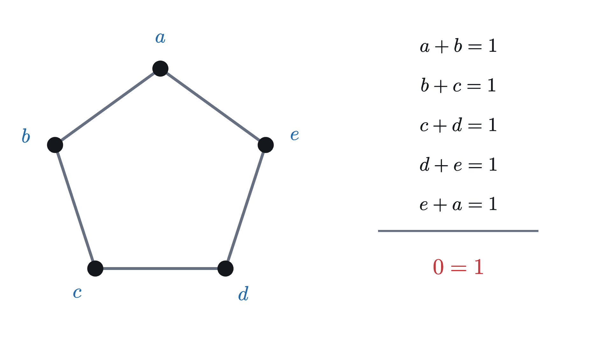

Proof of the cycle double cover conjecture
The step that was missing for fifty years. Why the paints chosen at each node can always be made to agree, by counting the two ends of every edge.
AssumesThe cycle double cover conjecture: bridges and paintNowhere-zero flows and the cycle double cover conjecture

Ten nodes each hold a dial with eight positions. Fifteen edges each make a demand on the two dials at their ends. There are $8^{10}$ ways to set the dials, more than a billion, and trying to satisfy the edges one at a time only moves the trouble around. Is there a setting that satisfies all fifteen at once?
For the Petersen graph a computer can find one, as in the figure. The cycle double cover conjecture comes down to showing that the same thing can be done for every graph, and the reason is a count: every edge has two ends.
What the first two lessons established
The first lesson reduced the conjecture to this: every bridgeless cubic graph (three edges at every node) has a painting, which gives each edge two coats in different paints so that at every node each paint is on two edges or on none. A painting is the same thing as a cycle double cover.
The second lesson made the paints codes of three bits, added column by column with $1 + 1 = 0$, so that $x + x = 0$ for every code. It cited the theorem of Jaeger and Kilpatrick: every bridgeless graph has a nowhere-zero three-bit flow, a label $f(e) \neq 000$ on every edge $e$ such that the three labels at each node add up to 000. And it found every way to paint around one node so that the two coats of each edge differ by its label. If the labels at a node are $x, y, z$, the node picks a code $s$, its slide, and gives the edge labeled $x$ the coats $s + y$ and $s + z$, and likewise for the other two edges. Each edge is painted with the slide plus the labels of the other two edges.
So every node paints its half of each of its three edges, and each edge is painted from both ends. We have a painting exactly when the two halves of every edge carry the same two paints. With all slides 000, twelve of the Petersen graph’s fifteen edges fail. What has to be proved is that suitable slides always exist.
A toy problem: a ring that must alternate
Before the real problem, here is one where the answer is visible at a glance, so that we can watch a method work. Color the edges of a ring of six nodes orange and blue so that the colors alternate. Let every node solve its own small problem: it colors the half-edge on one side orange and the half on the other side blue. Its only choice is which way round.

Now try the same with five nodes.
Pause and try
Before reading on: an edge whose halves agree has how many orange halves? What does that say about the total number of orange halves if every edge agrees? Compare with what the nodes supply.
Show answerHide answer
An edge that agrees is orange on both halves or blue on both, so it has two orange halves or none. If every edge agreed, the orange halves would come in twos and their total would be even. But each node colors exactly one half orange, whatever its choice, so a ring of $n$ nodes has exactly $n$ orange halves. With $n = 5$ that is odd, so not every edge can agree. With $n = 6$ the count is even and nothing stands in the way.
The same argument can be written with equations, which is the form we will need. Record each node’s choice as a bit, saying on which side its orange half lies. Call the bits $a, b, c, d, e$ around the ring of five. An edge agrees when the choices at its two ends are different, which for bits means that they add up to 1.

Add the five equations. On the left every unknown appears twice, and anything added twice is 0. On the right there are five 1s, which add up to 1. The sum reads $0 = 1$. The choices have dropped out, and what remains is the odd number five. No choice of bits can satisfy all five equations, since it would satisfy their sum.
Look at how the method went. Each node solved its own problem, with one free choice. The constraints were between neighbors only. Whether a solution for the whole ring exists came down to whether those constraints are compatible, and incompatibility showed up as a sum of equations reading $0 = 1$.
Equations between bits fail only by adding up to 0 = 1
An equation between bits is linear if it says that the sum of some of the unknowns equals 0 or equals 1. For systems of such equations, the ring of five shows the only thing that can go wrong.
This is elimination, as taught for ordinary systems of equations, carried out with bits. It turns the question “is there a solution?” into the question “can the equations be added up to $0 = 1$?”, and the second question can be attacked by counting.
Agreement written as equations
Back to the graph. Fix a cubic graph and a nowhere-zero three-bit flow $f$. For a node $v$ and an edge $e$ at $v$, let $c(v, e)$ be the label of one of the other two edges at $v$; pick either, once and for all. The other one is then $c(v, e) + f(e)$, because the three labels at $v$ add up to 000. So if $v$ has slide $s_v$, its half of $e$ carries the two paints
Pause and try
Let $p \neq 000$. Two pairs $\{A, A + p\}$ and $\{B, B + p\}$ are the same pair exactly when $A + B$ takes one of two values. Which two?
Show answerHide answer
The pairs are equal exactly when $A$ is one of $B$ and $B + p$ (the other member, $A + p$, is then the other one). That means $A + B = 000$ or $A + B = p$.
Apply this to an edge $e$ joining $u$ and $v$, with $A = s_u + c(u, e)$ and $B = s_v + c(v, e)$ and $p = f(e)$. Writing $d_e = c(u, e) + c(v, e)$, which is a known code, the two halves of $e$ agree exactly when $s_u + s_v + d_e$ is $000$ or $f(e)$. Introduce one more unknown bit $\varepsilon_e$ to say which.
Each of these is an equation between codes, so it is three equations between bits, one for each column. The unknowns are the three bits of each slide and the bit $\varepsilon_e$ of each edge, and every equation is linear. For the Petersen graph that makes 45 equations in 45 unknowns. By the theorem on the only obstacle, a solution exists unless some of these equations add up to $0 = 1$.
Adding up some of the equations
To describe a selection of equations we say, for each edge, which of its three columns are taken. Record that as a code $r_e$ with a 1 in each chosen column, and $000$ if none of that edge’s equations are taken.
Two rules follow column by column: $r \cdot (w + w') = r \cdot w + r \cdot w'$ and $(r + r') \cdot w = r \cdot w + r' \cdot w$. Also, $r \cdot w = 1$ for some $w$ forces $r \neq 000$.
Adding up the chosen columns of the equation of $e$ gives $r_e \cdot s_u + r_e \cdot s_v + \varepsilon_e \,(r_e \cdot f(e)) = r_e \cdot d_e$. Now add over all edges and ask when every unknown cancels. The unknown $\varepsilon_e$ occurs only in the equation of $e$, multiplied by $r_e \cdot f(e)$. A bit of the slide $s_v$ occurs in the equations of the three edges at $v$, and it cancels when the codes $r_e$ of those three edges have an even number of 1s in its column.
These are exactly the ways of adding up equations so that all unknowns cancel. What is left is $0 = \sum_e r_e \cdot d_e$, the sum over all edges. So the whole problem is now this: show that for every selection, the bits $r_e \cdot d_e$ add up to 0 and never to 1.
Since $d_e = c(u, e) + c(v, e)$, each edge contributes two bits, one for each of its halves. Call $r_e \cdot c(v, e)$ the bit of the half-edge of $e$ at $v$. (It does not depend on which of the two other labels was picked as $c(v, e)$, because they differ by $f(e)$ and $r_e \cdot f(e) = 0$.) Then
and we can add those up one node at a time, as we counted orange halves on the ring.
What the bit of a half-edge measures
It helps to see these bits before computing with them. Take a label $p$ and a code $r \neq 000$ with $r \cdot p = 0$. The eight paints fall into four pairs that differ by $p$, and the two paints of a pair have the same dot product with $r$. So $r$ splits the eight paints into two groups of four without splitting any pair, and the bit of a half-edge says in which group its pair of paints lies. The edge’s equation, tested with $r$, says that both halves lie in the same group.
With two-bit labels the picture is smaller and can be drawn on the graph. There are four paints, an edge labeled $p$ can carry one of two pairs, and exactly one of those pairs contains the paint 00. So for the one nonzero $r$ with $r \cdot p = 0$, the bit of a half-edge says whether its pair is the one without 00. Mark those halves with a tick across the edge.

This is the ring again, with one difference. On an edge that agrees, the ticks come in twos, so a solution needs an even number of ticks. The nodes supply an odd number each, as the nodes of the ring supplied one orange half each. But a cubic graph always has an even number of nodes, so here the supply is even and nothing stands in the way. With three bits there are more selections than this one, and we need to know what a node supplies in each.
What one node supplies
The proof needs one fact about codes.
Notice what happened to the slides. A node may slide its paints in eight ways, and the bit of each half-edge is computed without them: they cancelled when we added up the equations. On the ring every node supplied one orange half however it was flipped. Here a node supplies, as odd or even, as many as it has selected edges.
Every edge has two ends
The lesson on Euler paths uses the same count for all the edges of a graph.
Pause and try
A selection has ten selected edges. Knowing nothing else about it, what do the numbers of selected edges at the ten nodes add up to?
Show answerHide answer
Twenty. Each selected edge ends at two nodes and is counted once at each.

Everything is now in place.
The Petersen graph, solved
Solving the 45 equations for the Petersen graph, by elimination, tells each node how far to slide. One solution is the one the opening figure moves to.

A computer search over all slides finds 16 solutions for this labeling. Adding the same code to every slide turns a solution into another, which accounts for a factor of 8, so there are two kinds. One is shown. The other uses only five paints, whose cycles have 5, 5, 5, 6 and 9 edges.
The whole proof
Who proved what, and what is open
George Szekeres (1973) and Paul Seymour (1979) stated the conjecture; Alon Itai and Michael Rodeh gave an equivalent form in 1978, and OpenAI’s note also credits W. T. Tutte. The reduction to cubic graphs and the painting from a 3-edge-coloring are classical. The flow theorem is due to P. A. Kilpatrick (1975) and François Jaeger (1976, 1979). In 1983 Bermond, Jackson and Jaeger built from the flow seven sets of cycles covering every edge four times.
The new step is the theorem from a flow to a painting: read each label as the difference between two paints, let every node slide its triangle of paints, and notice that agreement between neighbors is a matter of adding bits. OpenAI published it in July 2026 in a note of under three pages, which states that the proof is entirely due to its model GPT 5.6 Sol Ultra. The prompt, also published, told the model to assume that a complete proof exists and to keep working for at least eight hours. OpenAI has also released a formalization of the theorem, for graphs as defined in the first lesson, that the Lean proof assistant checks. Jim Geelen and Sang-il Oum each wrote the argument out in their own way within weeks; the symmetric choice of paints at a node and the form of the count at a node used here follow Oum’s exposition. A paper by Shiva Kintali, posted the same week as OpenAI’s note and written with OpenAI’s Codex, gives a proof along the same lines starting from Seymour’s 6-flow theorem.
The subject is not finished. This construction can use up to eight paints. Uldis Celmins and Myriam Preissmann conjectured in the 1980s that five are always enough, and that five cycle double cover conjecture is still open.
The idea worth keeping is the one the ring showed. Solve the problem at every node separately. Write what neighbors must agree on as differences. Differences add up, and what adds up can be counted.
Check yourself
In a selection, how many of the three edges at a node can be selected?
Problems
The first three practice the tools, the next three look at the proof, and the last asks where three bits were used.
Problem 1
Three unknown bits satisfy $a + b = 1$, $b + c = 1$ and $c + a = 0$. Which selections of these equations make all the unknowns cancel? Does the system have a solution? What changes if the third equation is $c + a = 1$?
Show solutionHide solution
Each unknown is in exactly two equations, so it cancels only if both or neither of those are taken; that forces all three equations or none. The sum of all three is $0 = 1 + 1 + 0 = 0$, so by the theorem on the only obstacle there is a solution, for instance $a = 0$, $b = 1$, $c = 0$. With $c + a = 1$ the sum is $0 = 1$ and there is none: this is a ring of three.
Problem 2
Compute $101 \cdot 110$ and $111 \cdot 011$. List every code $r$ with $r \cdot 011 = 0$.
Show solutionHide solution
$101 \cdot 110$ adds the first and third digits of 110: $1 + 0 = 1$. $111 \cdot 011$ adds all the digits of 011: $0 + 1 + 1 = 0$. For $r \cdot 011 = 0$, the last two digits of $r$ must be equal, and the first is free: 000, 100, 011, 111.
Problem 3
An edge $e$ from $u$ to $v$ has label 011. The other two labels at $u$ are 110 and 101, and the other two at $v$ are 001 and 010. If $s_u = 000$, which slides $s_v$ make the two halves of $e$ agree?
Show solutionHide solution
Take $c(u, e) = 110$ and $c(v, e) = 001$, so $d_e = 110 + 001 = 111$. The equation $s_u + s_v + \varepsilon_e f(e) = d_e$ with $s_u = 000$ gives $s_v = 111$ when $\varepsilon_e = 0$ and $s_v = 111 + 011 = 100$ when $\varepsilon_e = 1$. Check: the half at $u$ carries $\{110, 101\}$. With $s_v = 111$ the half at $v$ carries $\{111 + 001, 111 + 010\} = \{110, 101\}$, and with $s_v = 100$ it carries $\{101, 110\}$. The other six slides fail.
Problem 4
In a selection, show that no node has exactly one selected edge. Deduce that the selected edges form a graph in which every node has degree 0, 2 or 3, and that the number of nodes of degree 3 is even.
Show solutionHide solution
If exactly one of the three codes at a node were different from 000, the three would add up to that code and not to 000, against the second rule. So the number of selected edges at a node is 0, 2 or 3. By the handshake lemma these numbers add up to an even number. The nodes with 0 or 2 contribute an even amount, so the nodes with 3 contribute an even amount as well, which requires an even number of them.
Problem 5
At a node with labels $x = 110$, $y = 011$, $z = 101$, find the code $m \neq 000$ with $m \cdot x = m \cdot y = 0$. Then list all triples $r_a, r_b, r_c$ that obey the two rules of a selection at this node and have $\lambda = 0$.
Show solutionHide solution
$m \cdot 110 = 0$ says the first two digits of $m$ are equal, and $m \cdot 011 = 0$ says the last two are equal, so $m = 111$. (Then $m \cdot z = 1 + 1 = 0$ too.) With $\lambda = 0$ each code is 000 or 111 and the three add up to 000, so the triples are $(000, 000, 000)$, $(111, 111, 000)$, $(111, 000, 111)$ and $(000, 111, 111)$. They have 0 or 2 nonzero members, as the count at a node says.
Problem 6
On the ring of five, each node supplied one orange half and the argument ended in $0 = 1$. In the theorem from a flow to a painting, each node supplies an odd or even number as well, and the argument ends in $0 = 0$. State precisely what is counted in each case and why one count can be odd and the other cannot.
Show solutionHide solution
On the ring, the total is the number of orange half-edges. Each node colors exactly one half orange, so the total is the number of nodes, which may be odd. In the theorem, the total is the sum of the bits of all half-edges for a given selection. By the count at a node, each node contributes the number of selected edges ending at it, as odd or even, so the total has the parity of the number of ends of selected edges. Each selected edge has two ends, so that number is twice the number of selected edges and is always even. One total counts nodes and the other counts ends of edges.
Problem 7
Where did the proof use that the labels have three bits? Examine the theorem on blind codes for four-bit codes $x \neq y$, and show by an example that the last step of the count at a node fails as written.
Show solutionHide solution
The count at a node used that only 000 and one other code $m$ have dot product 0 with both $x$ and $y$. With four bits, the same class-matching argument gives four classes of size $16 / 4 = 4$, so four codes are blind to $x$ and $y$: 0000, $m_1$, $m_2$ and $m_1 + m_2$. For example with $x = 1000$, $y = 0100$ and $z = 1100$, the blind codes are 0000, 0010, 0001, 0011. Take $r_a = 0010$, $r_b = 0001$, $r_c = 0011$. They add up to 0000 and each has dot product 0 with all of $x, y, z$, so both rules hold and $\lambda = 0$. But all three are nonzero, an odd number, while the half-edge bits add up to $\lambda = 0$. So the argument as given does not go through for four-bit labels, and three bits are what Jaeger’s theorem provides.